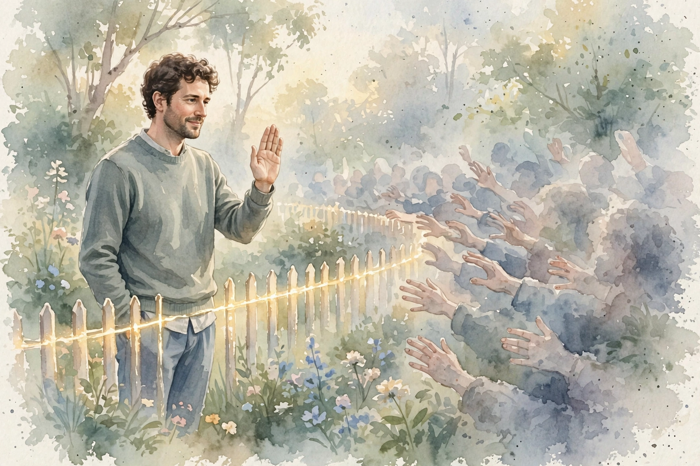

Modern Wisdom · Dating Instruction · Episode 4 · Companion
How Men Keep
Sabotaging
Themselves
Dr Robert Glover, author of No More Mr Nice Guy, maps the covert contracts that run the nice guy pattern and the 30-year-tested way out. This companion follows the full episode, section by section.
Illustration. The mask: pleasant on the outside, exhausted underneath. AI-generated watercolor, made for this page. No text appears in the image.
Reading guide. Each nugget separates SOURCE FACT (what Glover said) from INTERPRETATION (why it matters, the transferable principle). Charts name their source line.
Watch. The official episode video. Use the chapter menu above to jump to any section of this companion as you listen.
The Wisdom Index: every nugget in this companion
Part 1
What Is Wrong With Being a Nice Guy
Chris opens with the obvious question. Glover's elevator pitch: the nice guy internalized, very young, the belief that he is not okay just as he is. From that root grow two unconscious projects. First, become what he thinks everybody else wants him to be, so he will be liked and loved and get his needs met. Second, hide anything that might draw a bad reaction: his needs, his wants, his sexuality.
become what he thinks everybody else wants him to be
Dr Robert Glover · Episode transcript, definition section
The traits cluster fast. People pleasing. Chasing external validation, usually from women. Failing to live up to his potential. A core dishonesty, not of big lies but of constant small edits. And a dull background depression: he did everything right, so why is he not happy, loved, and getting what he wants.
The avatar is familiar. The man drifts through life trying to please everybody, never rocks the boat, and trades honesty for peace. "happy wife happy life" as a whole strategy. Glover jokes that he teaches a course called nice guys do not finish last, they end up in middle management: good at being good, never standing out, because standing out feels dangerous.
Part 2
The Three Covert Contracts
This is the heart of the episode, and Glover calls it many readers' biggest takeaway from No More Mr Nice Guy. Covert contracts are unspoken, often unconscious agreements the nice guy holds with everyone who is not him: the world, God, women, life itself. All three run on if then logic. All three are manipulative, strings attached, and nobody else knows they exist.
The three covert contracts
Hover any row for detail. Each is an if then deal nobody else signed.
Source: episode transcript, covert contracts section. Wording condensed from Glover's spoken if then statements.
Contract one: if I am a good guy, I will be liked and loved, and the women I try to impress will want me. Contract two: if I meet everybody's needs without them asking, they will meet my needs without me asking, which quietly demands mind reading from people who never agreed to it. Contract three: if I do everything right, I get a smooth problem free life. Here he is player, referee, and scorekeeper at once, staring at his own scoreboard and asking why the game still will not go his way.
The tell is resentment. Glover's diagnostic is simple: you know you run contracts because you walk around resentful and angry. You did it all right, you followed the rules, you met the needs, so when is it your turn. Chris adds the Neil Strauss line Glover endorses: unspoken expectations are premeditated resentment, paraphrased here because the transcript garbles the exact wording.
Nugget 1 · Contracts
Name the contract
Source fact. Glover defines three if then covert contracts and says their signature is chronic resentment at a world that never signed them.
Interpretation: why it matters. You cannot renegotiate a deal the other side never saw. Naming it converts a grievance into a choice.
Interpretation: the principle. Make every expectation explicit or drop it. Silent terms always charge you later.
Nugget 2 · Resentment
Resentment is the dashboard light
Source fact. Glover tells nice guys they will know they run contracts because they feel resentful and angry about not getting back what they gave.
Interpretation: why it matters. Resentment is not a mood. It is a meter reading on an unpaid invisible invoice.
Interpretation: the principle. When you feel resentful, ask what you expected without saying. Then say it or release it.
Part 3
Anxiety Is the Engine
Glover reframes the whole syndrome. The nice guy and the jerk are not opposites. They are two dysfunctional strategies for managing the same anxiety. There is no tipping point between them worth finding. The real move is to a different plane: learn to soothe yourself, get assertive, set boundaries, get differentiated, and ask what you want.
The root runs to childhood. For every child, abandonment equals death, because human young take longer than any animal to reach self sufficiency. Approval seeking is not vanity. It is an old survival program still running. Glover tells on himself: married seven years to Lupita, a Mexican woman he met in Mexico, he still watches a look cross her face and feels a surge of fix it panic that, when he sits with it, feels like dying if this does not get better right now. Thirty years of work, and the wiring still fires. The difference is that now he watches it fire.
nice guys are actually really terrible receivers
Dr Robert Glover · Episode transcript, contracts section
That line lands because it inverts the story nice guys tell. They think of themselves as givers. Glover says they cannot receive: not help, not care, not even their own needs met by their own hand. A man who will not be given to cannot be in a real exchange. He can only perform one.
Nugget 3 · The driver
Anxiety is the engine
Source fact. Glover frames nice guy and jerk as two anxiety management strategies and traces approval seeking to childhood abandonment wiring.
Interpretation: why it matters. Attacking the behavior leaves the driver in place. The pattern returns wearing a new mask.
Interpretation: the principle. Fix the regulation, not the performance. A calm nervous system needs no audience.
Part 4
The Way Out

Illustration. The boundary: kind, clear, and held without apology. AI-generated watercolor, made for this page. No text appears in the image.
Glover walks through what worked, for him and for clients across 30 years. Step one: "find safe people". You did not become a nice guy in isolation, so do not try to exit in isolation. Coach, therapist, men's group, twelve step room: pick a place to release shame out loud. He did a large part of his own rehabilitation in men's groups and led five a week in Seattle during private practice. His test for a good group or guide: the leader has done their own work. Ask about their journey and notice whether you connect.
Step two: get radically honest. He realized almost everything he told his then wife was engineered not to rock the boat, so he made a practice of confessing the edit in real time: here is the lie I almost told you, here is the truth instead. She stopped overreacting the moment he stopped managing her reactions.
Step three: make your needs a priority. Ask, daily, "what do I want". Gym, dentist, rest, a good book, time alone. Then learn to let people help you meet them. Step four: boundaries. Nobody grows up knowing how to set them, because childhood never teaches it. Adults must learn late what they missed early.
Thirty years of the work
Hover any point for detail. Glover's own timeline, as stated on the show.
Source: episode transcript, biography sections. Ages and counts are Glover's stated figures.
Nugget 4 · Recovery
Recovery is social
Source fact. Glover prescribes safe people first: coach, therapist, or men's group, plus radical honesty, needs as priority, and boundaries.
Interpretation: why it matters. Shame survives in secrecy and dies in company. People taught the pattern, so people help unlearn it.
Interpretation: the principle. Do not self improve alone. Borrow other nervous systems until yours steadies.
Takeaways
- Write down your covert contracts. If then deals you never voiced charge interest in resentment.
- Read resentment as data. It points at the expectation you never stated.
- Stop choosing between nice guy and jerk. Both manage anxiety. Learn to soothe it instead.
- Practice honesty in real time. Confess the edit before it hardens into a lie.
- Find safe people and ask what you want daily. Boundaries are a late learned skill, not a character flaw.